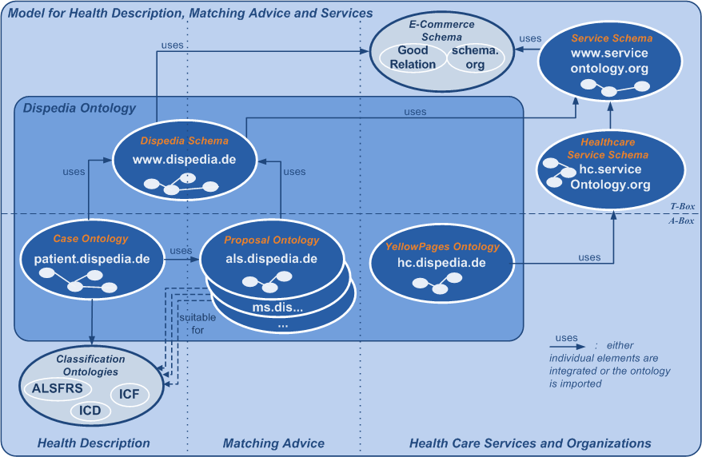

SCHEMA
Die Dispedia Architektur besteht aus einer Kern-Ontologie, die die Datensätze zur Integration von Informationen über Patienten und Informationen für Patienten mit seltene Erkrankungen. Das Dispedia Schema (siehe Abbildung) ist unter der Domain www.dispedia.de dereferenzierbar. Für die Verwendung bzw. Instanziierung des Schemas werden die verwendeten Ontologien gegliedert. Da die Sicht auf Patienten und die Beschreibung derer in sehr heterogener Weise, je nach beteiligtem Akteur (z.B. Arzt, Therapeut, Krankenkasse) geschieht, sieht das Dispedia Schema eine Integration von indivduellen Beschreibungen vor. Im Beispiel Amytrophe Lateralsclerose ist diese zum Beispiel die ALS-Functional Rating Scale. Als weitere Ontologie wird die krankheitsspezifische Sammlung von Lösungsvorschlägen für eine bestimmte Krankheit vorgehalten. Im Beispiel ALS ist das Expertenwissen unter der Domain als.dispedia.de zu verwenden. Dieses Konzept ermöglicht eine logische Erweiterung der Wissensbestände um weitere krankheitsspezifische Informationspools, die dann adäquat unter den jeweilen Domains zu finden sind. Die Server-Architektur kann sowohl webbasiert als auch als interne Variante installiert werden.